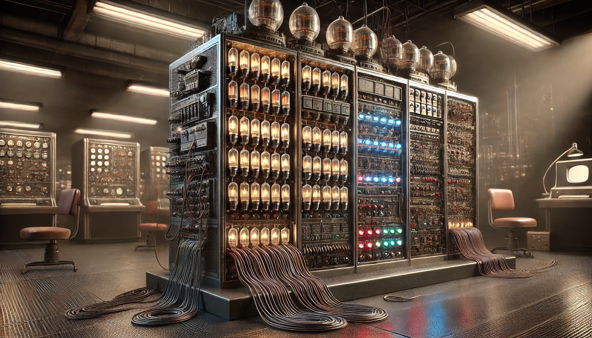
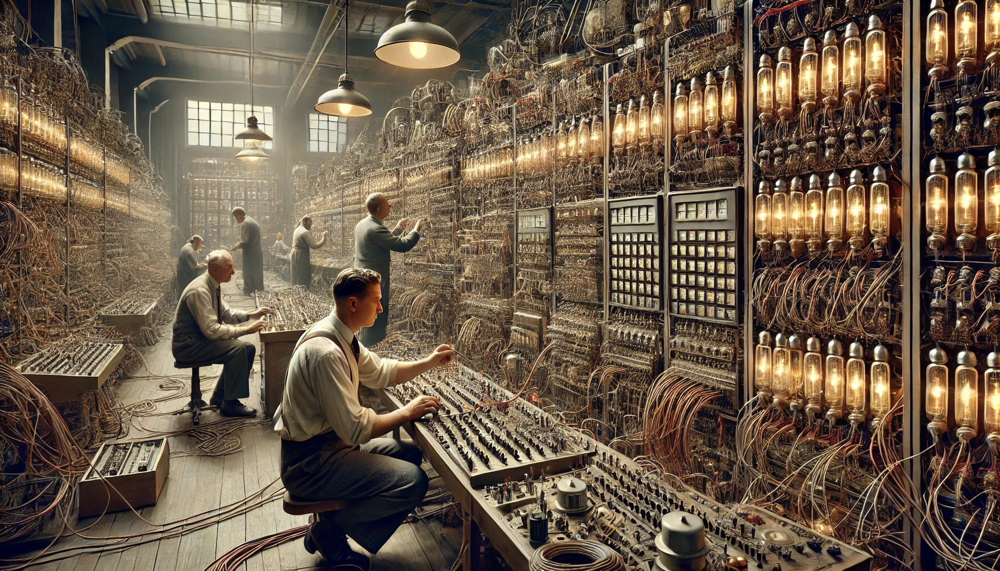
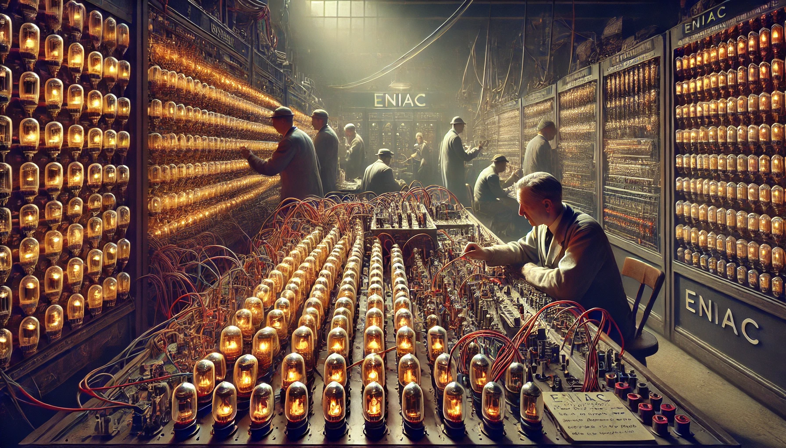
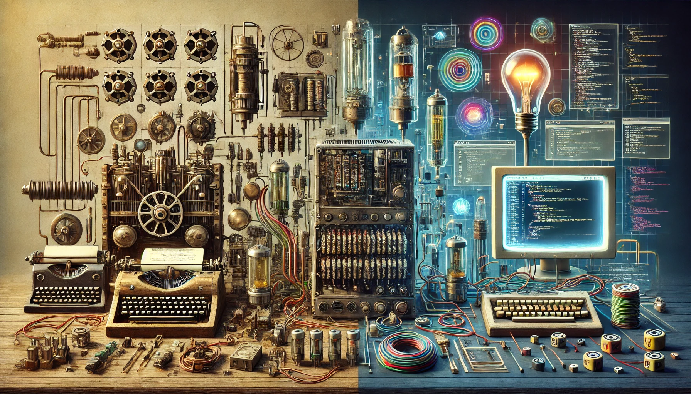

Перші програми без мов програмування
Вступ: Народження обчислювальної техніки
Сьогодні комп'ютери здаються нам чарівними пристроями, здатними виконувати мільйони операцій за секунду, але все починалося зовсім по-іншому. На початку, коли комп'ютери тільки з'явилися, не існувало зручних мов програмування, таких як Python, Java чи C++. Усі команди задавалися вручну, що вимагало глибокого розуміння роботи самої машини. Ця стаття розповість про історію перших програм, як вони створювалися і чому цей процес був таким складним, але водночас фундаментальним для подальшого розвитку технологій.
Як працювали перші комп'ютери
У 1940-х роках перші електронні комп'ютери, такі як ENIAC, займали цілі кімнати та складалися з тисяч електронних ламп і перемикачів. Ці машини не мали операційних систем і зручних інтерфейсів, тому для їх роботи інженерам доводилося буквально «програмувати» машину вручну.
Процес був схожий на налаштування величезного механізму: інженери вручну з'єднували спеціальні модулі за допомогою кабелів і встановлювали перемикачі для визначення послідовності операцій. Уявіть, що ви збираєте величезний конструктор, де кожна деталь відповідає за виконання конкретної арифметичної операції – додавання, віднімання, множення або ділення. Будь-яка помилка в з'єднаннях могла призвести до неправильної роботи всієї системи.
Приклад з історії: програмування ENIAC
ENIAC (Electronic Numerical Integrator and Computer) є одним із найяскравіших прикладів ранніх обчислювальних машин. Замість того, щоб писати програми у вигляді рядків коду, як ми робимо сьогодні, для ENIAC було потрібно фізично з'єднувати модулі за допомогою спеціальних кабелів. Інженери заздалегідь планували послідовність операцій, необхідну для виконання певного завдання, а потім вручну підключали модулі, щоб реалізувати цю послідовність.
Така робота вимагала не тільки терпіння, але й точності. Уявіть, що ви збираєте величезний механізм, де кожен елемент має бути точно налаштований для отримання правильного результату. Найменша неточність могла призвести до повного провалу завдання.
Еволюція: від ручного програмування до мов програмування
Перехід від ручного програмування до мов програмування був поступовим. Першим кроком стали спеціальні програми – асемблери, які переводили спрощені інструкції в машинний код.
Наступним важливим етапом стала розробка мов програмування високого рівня. Ці мови дозволили писати програми, використовуючи зрозумілу для людини мову та символи замість складних кодів.
Сьогодні, використовуючи комп'ютер або смартфон, ми рідко замислюємося, скільки зусиль було вкладено в створення перших програм. Шлях від ручного програмування до сучасних мов програмування – це історія інновацій, помилок і постійного розвитку, завдяки яким сьогоднішні технології стали настільки зручними й доступними.
